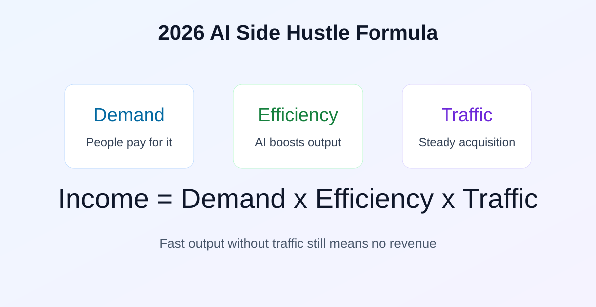
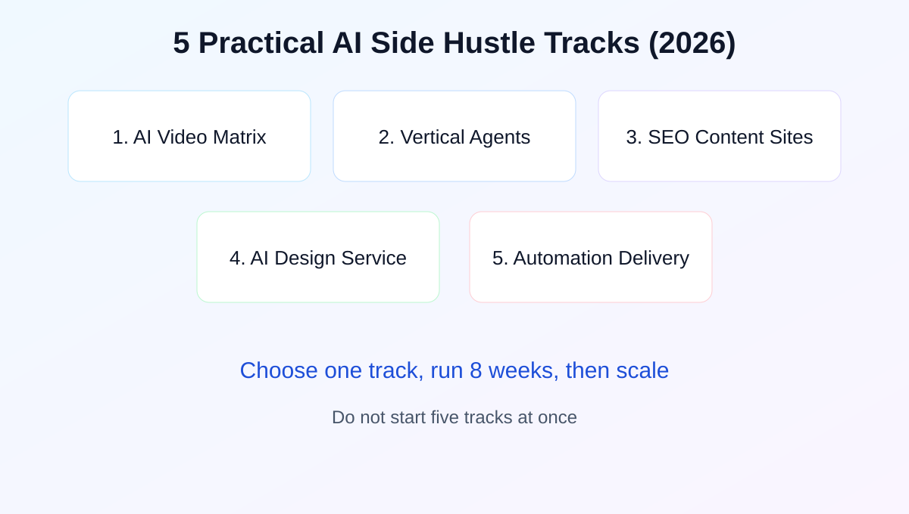
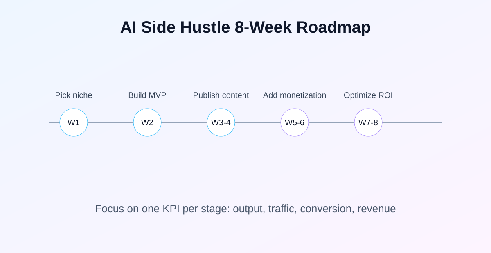

2026 全网最全：普通人利用 AI 开启副业的底层逻辑与 5 大实操赛道
这一篇不做“鸡血文”，只做能落地的副业路线图：你该做什么、先做哪一步、怎么判断能不能赚到钱。
先说一句实话：AI 副业从来不是“会不会写提示词”，而是你能不能持续拿到需求、稳定产出、把流量变成收入。
前言：为什么说 2026 是关键窗口期
很多人 2023 年在看热闹，2024 年试了几天，2025 年觉得“AI 也就那样”。到了 2026 年，局面已经变了：AI 不再是一个炫技工具，而是很多行业的默认工作层。你今天不做，明天不是“慢一点”，而是会被会用 AI 的人直接挤掉机会。
但这里有个常见误区：大家把 AI 副业理解成“批量生产内容”。真正长期能赚钱的，不是内容数量，而是交付能力。你能不能给用户一个明确结果？能不能帮他省时间、少踩坑、直接拿结果？这才是付费的根本。

一、先重构认知：AI 副业不是技术战，是商业闭环战
我建议你把所有项目先放进一个公式里：收入 = 需求 x 效率 x 流量。AI 主要解决的是效率，如果需求不存在或者流量进不来，再强的模型也救不了项目。
为什么很多人做了三个月就放弃？因为只顾着研究工具，没有研究“离钱最近的问题”。比如，你天天优化写作提示词，但没有找到愿意付费的用户场景；或者你写了很多文章，但没有做关键词布局和转化入口。结果就是：看起来很忙，账上没增长。
所以第一步不是“选模型”，而是先选场景。你要问自己：我到底帮谁解决什么问题？这个问题有没有付费意愿？能不能标准化复用？能不能规模化获取用户？
二、2026 年最值得做的 5 条赛道（按可执行性排序）

赛道 1：AI 视频矩阵（高收益，高强度）
视频依然是最强流量入口，但现在拼的不是“会不会剪辑”，而是能不能跑通稳定生产链。你需要一个固定 IP、人设脚本模板、固定发布节奏，而不是每天灵感驱动。
实操建议：先做一个垂类，例如科技快评、职场效率、情感话题。每周只测 3 个主题，连续 4 周看完播率和评论关键词，再决定是否放量。变现路径优先顺序建议：广告分成 -> 联盟链接 -> 轻咨询服务 -> 付费产品。
赛道 2：垂类 Agent（技术溢价最高）
这条线赚钱点很清晰：企业要的是“可用结果”，不是“AI 概念”。比如，给跨境卖家做评论自动归因与回复建议；给本地培训机构做课程咨询自动跟进；给中介门店做客户问答分流。
你可以先用低代码平台做 MVP，再按行业需求逐步加功能。前期报价别太低，重点卖“节省人力”和“减少漏单”。这条线最容易拿到高客单，但前提是你愿意啃业务细节。
赛道 3：自动化 SEO 内容站（你当前最匹配）
你现在这个站已经有了很好的底盘：静态站、日报自动化、工具页、分类页。下一步要做的不是“再发更多短文”，而是把每个高价值关键词做成深度页，再用日报导流。
建议你把关键词分三层：第一层是高意图对比词（如 ChatGPT vs Claude）；第二层是问题词（如 Claude 注册、AI 副业怎么做）；第三层是清单词（如免费 AI 工具推荐）。每层都要有对应入口页和转化按钮。
这条线的优势是可复利：内容被收录后会持续带流量，你每新增一篇优质内容都是在给未来现金流加资产。
赛道 4：AI 设计与定制服务（长尾稳定）
很多人以为 AI 绘图卷完了，其实真正有利润的是“定制化”而不是“生成本身”。比如装修效果预览、品牌形象扩展、节日营销素材包、IP 视觉定制。
这条线的关键不是模型参数，而是审美和沟通能力。你能把客户模糊需求翻译成可执行版本，再用 AI 快速出方案，这就是核心价值。
赛道 5：自动化交付服务（最容易起步）
这是我最推荐新手先做的一条线：把中小商家的重复工作自动化。比如数据报表整理、客服话术整理、内容改写、商品描述批量优化。你不需要先做产品，先做“代运营式交付”就能收钱。
这条线的优势是现金流来得快，缺点是规模化前比较吃时间。解决方法是边做边沉淀模板，把服务逐步产品化。
三、最容易踩的坑：为什么很多人做着做着就停了
- 坑 1：只追热点，不做结构。 每天追新闻很忙，但不形成可复用页面，流量留不住。
- 坑 2：过度迷信全自动。 纯采集和纯 AI 文本会导致质量不稳，长期会掉权重。
- 坑 3：一口气开 5 条线。 结果每条都半死不活。正确做法是先跑通一条，再复制。
- 坑 4：没有转化设计。 内容有了，入口没有，CTA 没有，流量白白流走。
四、新手可执行的 8 周落地路线

第 1-2 周：确定一个赛道，搭最小可用版本（一个主入口、一个转化页、三篇核心内容）。
第 3-4 周：稳定发布节奏，开始做关键词布局和基础内链。
第 5-6 周：接入变现模块（广告、联盟、服务咨询），同时观察点击数据。
第 7-8 周：只优化高潜力页面，把资源集中到带来收入的入口上。
这一阶段最重要的是“少而稳”。每天做一点，但连续做 8 周，比一天爆肝后断更强得多。
五、最后的建议：别问“还能不能做”，先做出第一笔闭环
AI 副业不是彩票，更像一个小型生意系统。你要做的是把它当业务来跑：有目标、有节奏、有复盘。第一阶段不要追求完美，追求第一个能证明模式成立的结果，比如第一笔联盟佣金、第一位咨询客户、第一篇稳定进流量的文章。
当你拿到第一个闭环，后面就是复制问题，不再是“会不会”的问题。你现在这个站已经具备了很好的基础，接下来就是持续加厚内容、优化转化入口，把流量往“离钱最近”的页面引导。